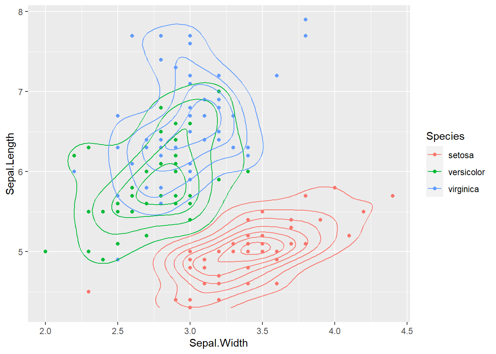

You’ll find the basics of programming here. Too many times when I learn a programming language, I find myself wanting to run advanced data analysis before I know how to do the basics. No Longer! Crawl, Walk, Program.
As it is titled, this is an introduction. You may already know the information here. If you feel confident in the material feel free to skip ahead and complete the assignment.
If you do not feel very confident in R programming, please follow this guide and save an R script for your future reference.
Open RStudio concurrently with this html guide.
Type the code from the coding blocks (just press the “code” button) into an R script for your own personal practice.
** You will not need to turn that personal script in. There is a separate assignment called “week 1 coding assignment” that you will turn in as an R script. **
Let’s get started.
Learning R is easiest when you take the time and write out code in the console. Instead of just copy+paste the code from this guide, please write it out in R.
Hastags are helpful ways to save hints or comments in your code. Simply put a # before anything you do not want run as code. This will allow you to annotate and leave computational breadcrumbs along the way. It is really easy to forget what you wrote in your code down the line, so best to remind yourself with a # comment.
While programming in any language, you need to use variables to store information and data. Frequently used data storage types are the following:
Vectors
Lists
Matrices
Arrays
Factors
Data Frames
A vector is the simplest type of data structure in R. Simply put, a vector is a sequence of data elements of the same basic type.These objects are made up of different classes. Below are the most important to know right now.
Logical vectors are TRUE or FALSE or T or F. These are also known as Boolean. Think of logical vectors as light switch, it’s either on or off (in this case, True or False). Run the following code in your R script:
L <- T
class(L)## [1] "logical"LL <- FALSE
class(LL)## [1] "logical"This one is easy. Double or Numeric vectors contain numbers. Could be 12, 5.8, or 13024.394. Run the following code in your R script:
N <- 23
class(N)## [1] "numeric"print(N)## [1] 23NN <- 45.84859
class(NN)## [1] "numeric"Integer can get confused with numeric. However, integers are numbers with the attached “L”. Run the following code in your R script:
I <- 5L
class(I)## [1] "integer"print(I)## [1] 5Complex contains real and imaginary numbers. We probably won’t be using these but it’s good to know. Run the following code in your R script:
C <- 5 + 12i
class(C)## [1] "complex"Simple, straightforward. Run the following code in your R script:
Char <- "Josh"
class(Char)## [1] "character"sentence <- "This is a sentence"
class(sentence)## [1] "character"Multiple element vectors are just as they sound. They contain multiple vectors. Run the following code in your R script:
mult <- c("Hello", "World")
class(mult)## [1] "character"print(mult)## [1] "Hello" "World"mult2 <- c(5, 6, 6, 3, 23)
class(mult2)## [1] "numeric"print(mult2)## [1] 5 6 6 3 23A List is an R-object which can contain many different types of elements inside it. Run the following code in your R script:
list1 <- list(c(3, 4, 5, 6), "Hello", c("This", "is", "fun"))
class(list1)## [1] "list"print(list1)## [[1]]
## [1] 3 4 5 6
##
## [[2]]
## [1] "Hello"
##
## [[3]]
## [1] "This" "is" "fun"A matrix is a two-dimensional rectangular data set. It can be created using a vector input to the matrix() function. It consists of columns and rows. specify dimensions by nrow = and ncol = and byrow =
matrix1 <- matrix(c(3, 5, 7, 2, 4, 6, 1, 3, 5), nrow = 3, ncol = 3, byrow = T)
matrix1## [,1] [,2] [,3]
## [1,] 3 5 7
## [2,] 2 4 6
## [3,] 1 3 5m2 <- matrix(c("Test 1", 88, "Test 2", 92, "Test 3", 76),
nrow = 3, ncol = 2, byrow = T)
m2## [,1] [,2]
## [1,] "Test 1" "88"
## [2,] "Test 2" "92"
## [3,] "Test 3" "76"# you can even do analysis with list elements
## average test scores
x <- as.numeric(m2[4:6])
sum(x)/3## [1] 85.33333Matrices are confined to 2 dimensions, but arrays can be any number of dimensions. The number of arrays produces a different possible order scenario.
# # what goes in array # dimensions. 3x3, 2 arrays
A1 <- array(c("One", "Two"), dim = c(3, 3, 2))
A1## , , 1
##
## [,1] [,2] [,3]
## [1,] "One" "Two" "One"
## [2,] "Two" "One" "Two"
## [3,] "One" "Two" "One"
##
## , , 2
##
## [,1] [,2] [,3]
## [1,] "Two" "One" "Two"
## [2,] "One" "Two" "One"
## [3,] "Two" "One" "Two"Factors are r-objects created using a vector. It stores the vector along with the distinct values of the elements in the vector as labels. Labels are always character irrespective of whether it is numeric or character or boolean. Useful in statistical modeling.
# Create a vector
colors <- c("Blue", "Green", "Orange", "Blue", "Blue", "Orange", "Green")
# create a factor object
factor_colors <- factor(colors)
# print factor / Checks which unique objects are there and how many
factor_colors## [1] Blue Green Orange Blue Blue Orange Green
## Levels: Blue Green Orangeprint(nlevels(factor_colors))## [1] 3Literally the best. Data Frames are tabular data objects with headers, columns, rows.
Info <- data.frame(
Name = c("Steve", "Tim", "Tyrone"),
Age = c(44, 48, 37),
Occupation = c("Nurse", "Accountant", "Police Officer"),
Height.inches = c(72, 63, 74)
)
Info # notice under each header, the class is specified## Name Age Occupation Height.inches
## 1 Steve 44 Nurse 72
## 2 Tim 48 Accountant 63
## 3 Tyrone 37 Police Officer 74First, install
You can also make a data frame from individual vectors using the data.frame() function.
test <- c(1, 2, 3)
score <- c(88, 68, 92)
name <- c("Liz", "Jessica", "Rhonda")
results <- data.frame(test, score, name)
results## test score name
## 1 1 88 Liz
## 2 2 68 Jessica
## 3 3 92 Rhondaa variable is a name by which data is stored.
Variable.Name <- c("var_name2.", "var_name%", "2var_name",
"var_name or var.name", ".2var_name",
"_var_name")
Validity <- c("Valid", "Invalid", "Invalid", "Valid",
"Invalid", "Invalid")
Reason <- c("Has letters, numbers, dot and underscore.",
"Has the caharcter '%'. only dot(.) and underscore are allowed",
"Starts with a number",
"Can start with a dot(.) but the dot(.) should not be followed by a number",
"The starting dot is followed by a number making it invalid",
"Starts with _, which is invalid")
rules <- data.frame(Variable.Name, Validity, Reason)
library(pander)
pander(rules)| Variable.Name | Validity | Reason |
|---|---|---|
| var_name2. | Valid | Has letters, numbers, dot and underscore. |
| var_name% | Invalid | Has the caharcter ‘%’. only dot(.) and underscore are allowed |
| 2var_name | Invalid | Starts with a number |
| var_name or var.name | Valid | Can start with a dot(.) but the dot(.) should not be followed by a number |
| .2var_name | Invalid | The starting dot is followed by a number making it invalid |
| _var_name | Invalid | Starts with _, which is invalid |
# view all the current variables assigned in the environment
print(ls())## [1] "A1" "badass" "C" "Char"
## [5] "Colorado" "colors" "Counties" "factor_colors"
## [9] "fires" "G" "geo" "i"
## [13] "I" "Info" "iris_new" "iris_select"
## [17] "jumps" "L" "list1" "LL"
## [21] "m2" "matrix1" "mesa" "mult"
## [25] "mult2" "N" "name" "nbr_post"
## [29] "nbr_pre" "ndbi" "ndbi_class" "ndbi_R"
## [33] "NN" "numbers" "PG" "PG_post"
## [37] "PG_postC" "PG_pre" "PG_preC" "PG_v"
## [41] "post_2" "post_3" "post_4" "post_5"
## [45] "post_7" "post_nat" "pre_2" "pre_3"
## [49] "pre_4" "pre_5" "pre_7" "pre_nat"
## [53] "Reason" "results" "rules" "score"
## [57] "sentence" "setosa_small" "states" "survey"
## [61] "test" "Validity" "Variable.Name" "was_it"
## [65] "x" "x1" "x2"An operator is a symbol that tells the compiler to perform specific mathematical or logical manipulations.
Types of Operators:
Arithmetic
Relational
Logical
Assignment
Miscellaneous
# + (adds two vectors)
v1 <- c(5, 4, 6, 8)
r1 <- c(4, 2, 6, 9)
v1 + r1## [1] 9 6 12 17# - (subtracts vector from first)
v1-r1## [1] 1 2 0 -1# * (multiplies the vectors)
v1 * r1## [1] 20 8 36 72# / (Divides first vector by second)
v1 / r1## [1] 1.2500000 2.0000000 1.0000000 0.8888889Creating a function saves time on a repeated process.
Below is an example template for a function:
function_name <- function(argument1, argument2) { # document your function here # what the function does # function inputs and outputs some_calculated_output <- (argument1 + argument2) return(some_calculated_output) }
Most computing can be done manually as shown below. However, if you develop a function, you can compute quicker. Plus its cool.
# assign a fahrenheit temp
temp_f <- 5
# calculate kelvin
((temp_f - 32) * (5/9)) + 273.15## [1] 258.15# Create a F to K function
fahr_to_kelvin <- function(fahr) {
# function that converts temperature in degrees Fahrenheit to kelvin
# input: fahr: numeric value representing temp in degrees farh
# output: kelvin: numeric converted temp in kelvin
kelvin <- ((fahr - 32) * (5 / 9)) + 273.15
return(kelvin)
}# Test the function
fahr_to_kelvin(5)## [1] 258.15years_to_hours <- function(years) {
# function that converts years to hours lived
# input: years: numeric value of how many years you've lived
# output: hours: numeric value of how many hours you have lived
hours <- ((years * 365) * 24)
return(hours)
}years_to_hours(28)## [1] 245280Circumference_from_Radius <- function(radius) {
# function that calculates circumference from radius
# input: radius
# output: circumference
circumference <- ((2 * 3.1415) * radius)
return(circumference)
}Circumference_from_Radius(8)## [1] 50.264We will be using functions and pre-built code through what are called packages. Developers create packages to make our lives much easier. It’s a pretty simple process:
If you have never before used the package, install it by using the function: install.packages()
Inside the (), put the package name in “quotations”.
Once the package is installed, load the package into usage by using the function: library()
Inside the (), put the name of the package.
Lets install a very common plotting package, ggplot2.
# install.packages("ggplot2") # make sure there isn't a hashtag before this code!
library(ggplot2)If you are new to plotting in R, let’s make a quick plot using the ggplot2 package we just created. We will also be using the built-in dataset: iris. For now, this is just for fun, we will cover plotting and data visualization later this semester. Run the following code in your R script:
ggplot(iris, aes(x = Sepal.Width, y = Sepal.Length, col = Species)) +
geom_point() +
geom_density2d()
If you followed along in your own R script, go to File > Save. Save the script in your NR 6950 folder as introduction_to_r_programming.R
For now, these are just some basics you need to know how to do. You may forget them so please refer back to either this document or your own annotated R script.